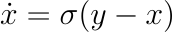
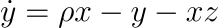
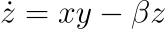
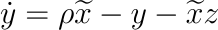
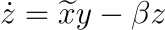

This demonstration uses results from chaos theory to mask and unmask a signal.
I assume no prior understanding of chaos, but if you already know what an attractor is, you can hide that part of the explanation.
Show introduction to chaos
Why is this interesting?
It's a little hard to see because of the randomness, but the mask is actually entirely different each time you regenerate it, and yet each time the decoder can pick it out and remove it.
The decoder doesn't know the mask in advance!
It only uses the image itself to decode.
You can test that out by sending an encoded image to a friend and directing them to this site to decode it.
How does this work?
This was inspired by work from Steven Strogatz (more precisely, his student Kevin Cuomo), as explained here .
First, the image is understood as a list of numbers 0-255 by looping through all its pixels' RGB channels.
The encoder overlays a mask on the image.
The mask comes from the time series of a Lorenz system.
The Lorenz system
The Lorenz system is a set of three differential equations:



It was originally intended to be a simple model of atmospheric convection, but you can think of it as a particle in 3D space moving along a certain flow.
The dynamical variables are x , y , and z , while σ , ρ , and β are parameters that can be tuned to change the behaviour of the system.
The mask that actually gets overlaid over the image is the time series of the x variable, while y and z are ignored.
This system has the curious property that from any possible starting point, it settles into a strange kind of regular-irregular motion (image source ):
In the long term, the motion is chaotic: there's basically no connection between where the system was a long time ago and where it is now.
In fact, if you start multiple such systems really close together, over time, they diverge (video source ):
Video loading...
I also add a tiny random shift to z each step that ensures the mask is different each time.
The shift is absolutely minuscule, just a millionth of the typical value, but the system naturally amplifies any changes.
Synchro stuff
But if the system's evolution cannot be predicted, then how can the decoder recreate the mask?
The key here is chaotic synchronisation .
The idea is that you run a Lorenz system, but replace some of the input in its differential equations with data that came from a previous run.
It only needs data for one of the variables, x .
The new equations are these, with the tilde meaning that the variable value is taken from the driving data, not the system's own data:


If you do this, you find that the system recreates the entire original run exactly.
Now, if you feed it the correct data it expects, plus some other data, the idea is that because the other data is not chaotic, the system cannot reproduce it, so it just ignores it.
The decoder gets the signal and the mask together and has to get only the signal out.
It does that by recreating the mask and subtracting it.
The full idea is this:
Mask: image data + mask data = driving data
driving data → reconstructed mask data
driving data - reconstructed mask data = reconstructed image data
This process crucially depends on the filter working, that is, the reconstruction rejecting image data.
There are two big problems with this scheme.
Strogatz originally used it on sound, and he built the Lorenz system as an analog circuit.
I tried the scheme with image data and, at first, failed utterly.
The problem is that image data is purely positive (there can't be negative brightness), while sound is an oscillation.
It turns out that the Lorenz system receiver can pick up a shift much better than oscillations.
I solved this by multiplying the image data with a parity bit: alternating plus or minus one.
How well does this work?
Maybe you are unconvinced.
The mask has horizontal stripes, so maybe it just changes too slowly and all that happens is that the reconstruction finds the rapidly oscilating part of the signal.
This box tests exactly that.
Decode an image without chaos
Steal from above
I hope this convinces you that the chaotic decoder does do nontrivial work.
There is a way to show it better:
So, is this useful at all?
Probably not for sending actual secrets, especially because you can't easily give this system a key as a parameter, so anybody can decode your image on this site.
(you could change the parameters, but that's just three numbers and thus brute-force-able)
Instead, this is a demonstration of a kind of signal processing.
With ordinary periodic signals, it's easy to build a device that picks out a particular frequency and ignores everythng else: that's how radios work.
Maybe there is some way to encode information into the chaotic mask.
Then, this mask can be synchronised with.
The image is just an elaborate way to show that noise in the environment won't get picked up on.
Already in this demonstration, I fiddle with the mask a little bit, changing it by a tiny random factor to make it unique each time.
It is known that chaotic systems can be stabilised to periodic orbits with the smallest nudges, if applied at the right time in the right way.
Perhaps you could also encode zeros and ones somewhere in the number of orbit the system makes on either side before flipping.
And why would you want to do that ?
I am not sure.
But there might be a situation in which you have to send a signal that isn't periodic.
Perhaps you could use it to see which frequencies get attenuated.
The Lorenz system is very much not periodic: its spectrum looks like white noise.
Maybe (I haven't tested this) such a system would be more resistant to periodic noises.
Maybe (I haven't tested this) you could run multiple chaotic systems at once, with different parameters, and they would not interact.
I doubt it, though.
I haven't yet had a problem that could be solved with this, but perhaps one day I will, and then I'll try this.
Till then, have this toy!